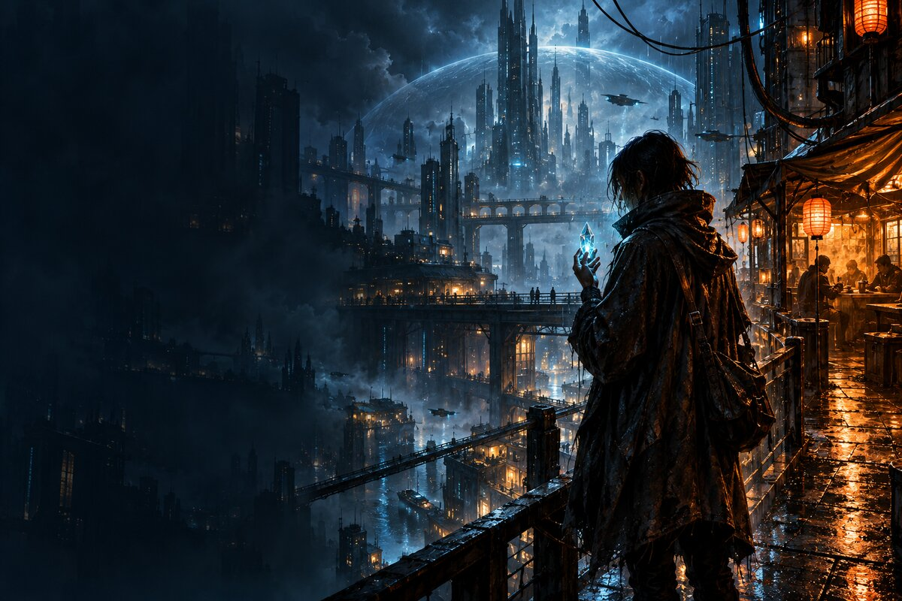
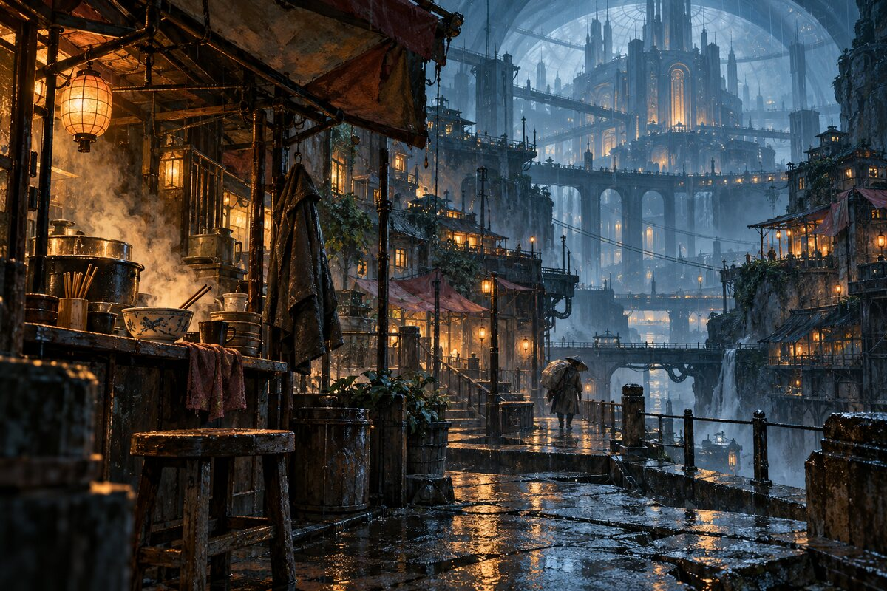
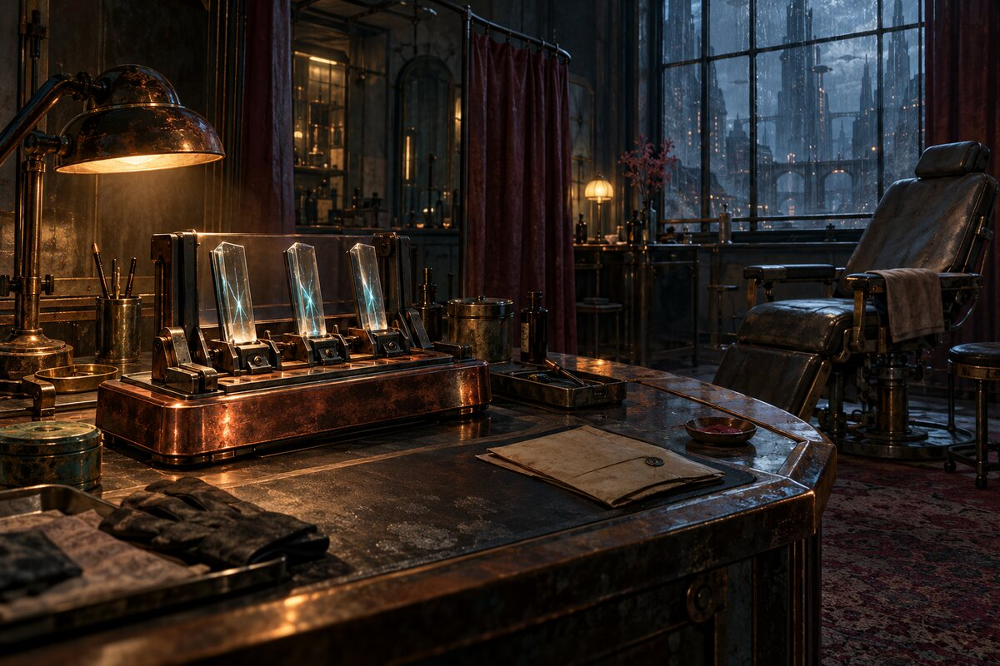
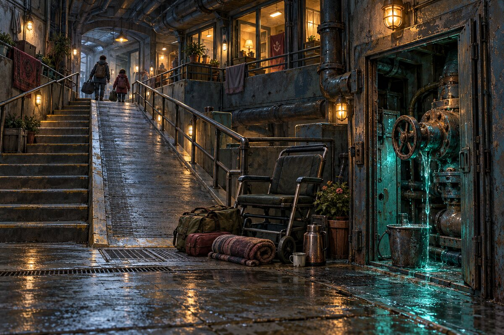
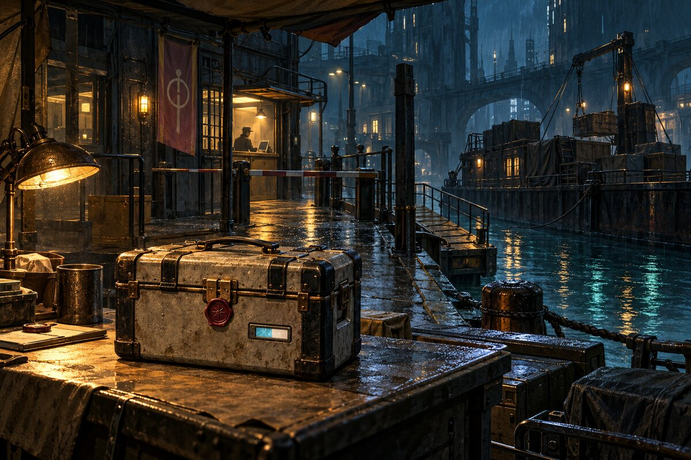
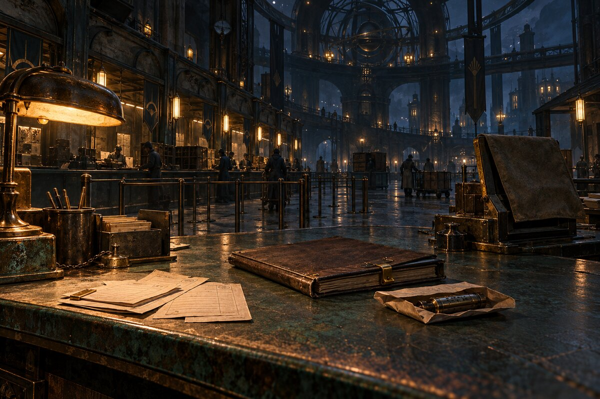
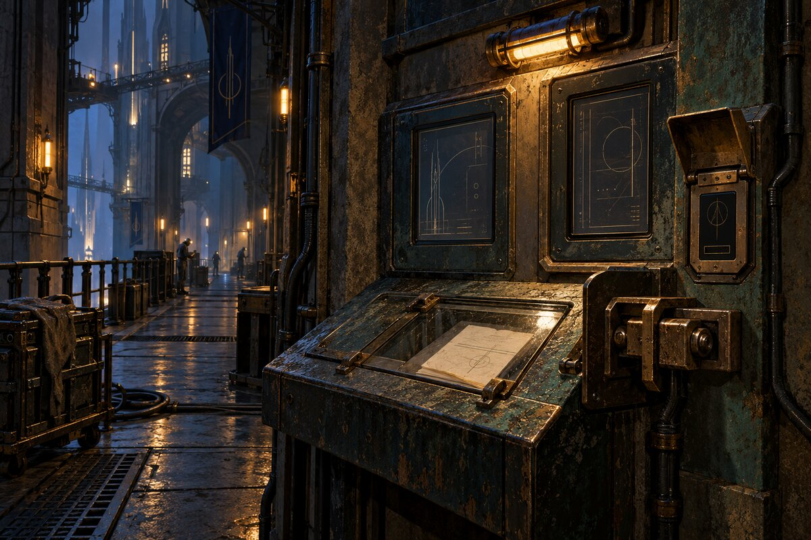
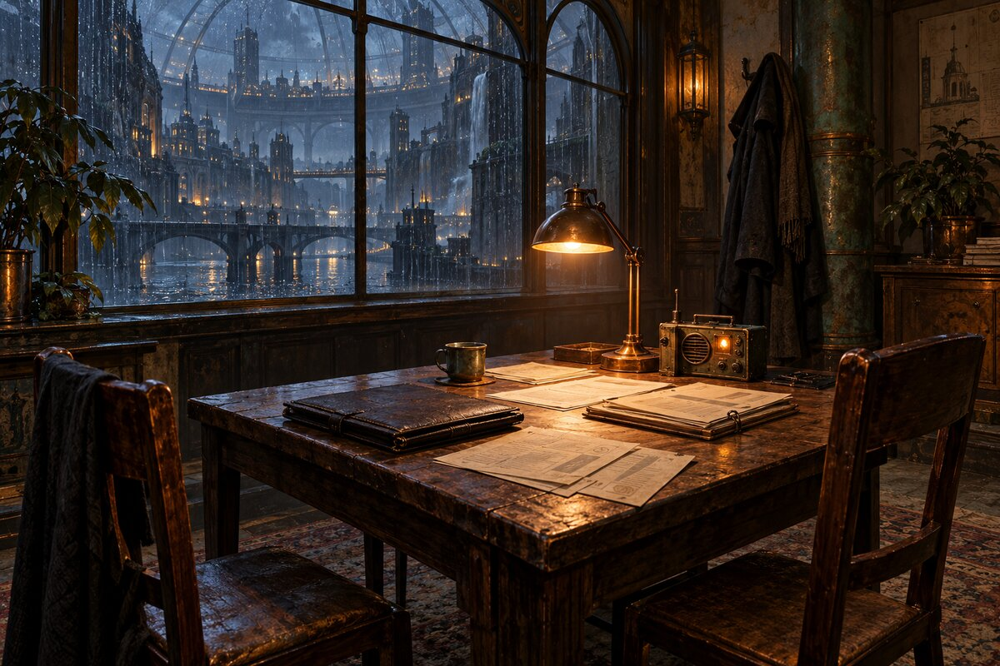

Saint Shard — media audition
Eleven generated images and four original synthesized arrangements. The preview plays eight seconds of each score in order. Full loops remain available below. This is an internal audition, with independent visual and listening review still open.
Under the Awnings
Street / opening: felt-key motif, bass and sparse plucks. 32-second stereo loop, 60 BPM.
Download WAV
An Hour in Glass
Memory / clinic: suspended harmony and struck glass. 32-second stereo loop, 60 BPM.
Download WAV
The Work Between
District work: restrained plucked movement and bass. 32-second stereo loop, 60 BPM.
Download WAV
Names in the Rain
Witness / memorial: warm bowed tones and an answering motif. 32-second stereo loop, 60 BPM.
Download WAV
Title key art

Title key art · symbolic and spoiler-free; no mission outcome or starting inventory is implied.Encounter art

Kite City under the awnings; inhabited lower wards and an intimate noodle stall before midnight.
Memory inspection bench with three glass slivers, empty padded chair and clinic task light; no disclosed evidence.
Shelter leak before resolution; accessible ramp, bucket, valve, blankets and a parked transport chair.
Protected sealed diagnostic parcel at the canal dispatch table before delivery is confirmed.
Helion service counter: neutral shifts, closed folio and sleeved receiver; no handover or closure claimed.
Spire maintenance alcove: waiting terminal, paper request, service latch and badge reader; no outcome indicators.
Later Ward Nine payroll table: closed folio, neutral papers and reply relay; no payment or refund claimed.Character portraits
NiaEddaAsa
Source details: art provenance · audio provenance.